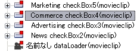

「Flash アクセシビリティモード」で Flash コンテンツを含むウェブページのアクセシビリティをチェックする
「Flash アクセシビリティモード」では、Flash コンテンツを含むウェブページを読み込んで、視覚障害者が使用するスクリーンリーダなどでどのように読み上げられるかをチェックし、アクセシビリティ上の問題点を修正することができます。
Flash コンテンツのアクセシビリティガイドライン
Flash コンテンツに対するアクセシビリティガイドラインで特に有名なものはありませんが、Adobe® Systems Inc. よりベストプラクティスが公開されています。
ボブ リーガン著, 「アクセシブルな Flash デザインのベストプラクティス」, 2003年10月, Adobe Systems Inc. (PDF ファイル)
この文書には、ベストプラクティスとして以下の8項目があげられています。
- テキスト情報を提供する
- アニメーションを制御する
- サイト構造に関する情報を提供する
- キーボードのみでの操作を保証する
- 音声読み上げ順序を制御する
- コンポーネントのアクセシビリティを有効にする
- キャプションを提供する
- 色を思慮深く使用する
以下で、これらを aDesigner の Flash アクセシビリティモード (および他のモード) を用いてチェックする方法を説明します。
なお、前述の文書は、「ガイドライン」 ではなく 「ベストプラクティス」 であることに注意してください。
これらの多くは、自動的にチェックすることが困難であり、人手を必要とします。aDesigner はこのプロセスを効率的にサポートします。
各項目のチェックプロセス
以下のチェックは 「Flash アクセシビリティモード」 で行いますが、8. 色の使用に関する注意のみ、「HTML アクセシビリティモード」 で行いますので、ご注意ください。
チェック対象となるウェブページをブラウザビューに表示してください。
1. テキスト情報の提供
- ブラウザビューにウェブページを表示すると同時に、アクセシビリティ・チェックが自動的に実行されます。ウィンドウ内の各ビューに結果が表示されるまでお待ちください。
- アクセシビリティ自動チェック結果の確認:
GUI レポートビューに、アクセシビリティ自動チェックの結果が表示されます (図1)。表示された問題点については、GUI アクセシビリティモードで検出される問題点を参照してください。ここに表示される問題点は、すべてテキスト情報の欠落に関するものです。
- 標準設定では、ウェブページ全体がチェック対象となります。
Flash コンテンツのみを対象にしたい場合は GUI サマリービューのメニューで 「Flash 項目のみ表示する」 をオンにしてください。
- 表示されるエラーの種類 (エラー、警告、情報) を変更したい場合は、ビューメニュー (Ctrl+F10) で変更することができます。
- エラー表示行を選択すると、エラーの場所がブラウザビューで点滅すると共に GUI サマリービューおよび GUI アウトラインビュー上で選択され、どこにエラーがあるのかを確認することができます。
- チェック結果の例： テキスト情報のないボタンが検出された場合
GUI サマリービューには 「(数字) ボタン」 のように
表示されます (図2)。これは、スクリーンリーダの種類によっては、このように読み上げられることを意味します。
また GUI アウトラインビューでは 「名前なし (ボタン)」 と表示されます (図3)。
図1. 自動アクセシビリティ・チェック結果
図2. テキスト情報のないボタン (GUI サマリービュー)
図3. テキスト情報のないボタン (GUI アウトラインビュー)
2. アニメーションの制御
- GUI サマリービューまたは GUI アウトラインビューで、アニメーションオブジェクトがスクリーンリーダでは読上げられないことを確認します。
- 点滅などの視覚的なチェック項目に関しては、ブラウザビューで目視で確認します。
3. サイト構造に関する情報の提供
- GUI サマリービューまたは GUI アウトラインビューで、サイトの構造や状態に関する説明テキストが与えられているかを確認します。
- スクロール、あるいは操作によりアプリケーション画面が変化した場合は、いずれかのビューで 「最新の状態に更新する」 を実行して、再度確認します。
- 必要に応じて GUI サマリービューの 「全体を読み上げる」 機能を使用して、合成音声による聞き取りやすさを確認します。
4. キーボードのみでの操作の保証
- ブラウザビューまたは通常のブラウザで、キーボードのみで （マウス等を使用しないで）すべての操作が可能であることを確認します。
5. 音声読み上げ順序の制御
- GUI サマリービューで、読み上げ順序が適切であることを確認します。ビューのテキストの内容および順序は、MSAA を使用するスクリーンリーダが読み上げるテキストをシミュレートしています。
- スクロール、あるいは操作によりアプリケーション画面が変化した場合は、「最新の状態に更新する」を実行して、再度確認します。
- 必要に応じて 「全体を読み上げる」 機能を使用して、実際の読み上げイメージを確認します。また合成音声による聞き取りやすさを確認します。
6. コンポーネントのアクセシビリティの有効化
- Flash アウトラインビューでコンポーネントオブジェクトを探します。
ビューの各エントリを選択すると、GUI プロパティビューに詳細が表示されます。
プロパティ名 isUIComponent の値が true になっているものがコンポーネントオブジェクトです (図4)。
コンポーネントを探す時は、以下のヒントを参考にしてください。
- Flash 制作時に付けたインスタンス名が分かっている場合は、Flash アウトラインビューでその名前を持つインスタンスを探します。
- インスタンス名が分からない場合は、エントリを選択した時にブラウザビュー上でハイライトされる位置を参考にインスタンスを探します。
- コンポーネントに role が正しく割り当てられていることを確認します。
コンポーネントの種類 (クラス) は、className プロパティの値に対応します。図4 の例では、CheckBox クラスであることがわかります。
GUI プロパティビューで accInfo プロパティが存在し、その下の role プロパティ値がクラスと対応していることを確認して下さい。
図5 は正しく role がセットされている例です。
role が正しくセットされている場合には Flash アウトラインビューでのアイコンも変化します。
アクセシビリティが考慮されていないコンポーネントの場合、図6 のように一般のボタンを表すアイコンが表示されていますが。
考慮されている場合は、図7 のようにコンポーネントの種類に合わせたアイコンが表示されます。
図4. コンポーネントの GUI プロパティ
図5. コンポーネントにroleがセットされているか確認する

図6. アクセシビリティを考慮していないコンポーネントの Flash アウトラインビュー上の表示
図7. アクセシビリティを考慮したコンポーネントの Flash アウトラインビュー上の表示
7. キャプションの提供
- ブラウザビューまたは通常のブラウザで、キャプションが適切に提供されていることを確認します。
8. 色の使用に関する注意
- このチェックのみ、「HTML アクセシビリティモード」 の 「ロービジョン」タブ で行います。
ロービジョンシミュレーションに関する詳細は、関連項目を参照してください。
- ロービジョンシミュレーションでのチェック結果を参考に、情報を色のみで伝達していないことや、弱視のユーザへの配慮がなされていることを確認します。
- スクロール、あるいは操作によりアプリケーション画面が変化した場合には 再度チェックを実行します。